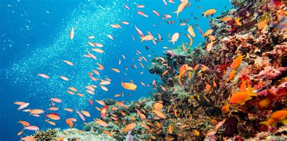

¿Qué se está haciendo para resolverlo?
Diversas organizaciones internacionales, gobiernos y la sociedad civil están poniendo en marcha iniciativas clave para frenar el deterioro marino:
- Tratado Global de los Océanos: Aprobación del acuerdo histórico de la ONU para proteger el 30% de las aguas internacionales para el año 2030 (Objetivo 30x30).
- Regulaciones de plásticos de un solo uso: Aplicación de normativas estrictas en la Unión Europea para prohibir cubiertos, pajitas y envases de plástico no reutilizables.
- Áreas Marinas Protegidas (AMP): Creación de reservas donde la pesca extractiva y la actividad industrial están totalmente restringidas para permitir la recuperación de la biodiversidad.
- Innovación en pesca sostenible: Certificación de capturas y seguimiento mediante satélite para reducir las capturas accidentales de especies amenazadas.
